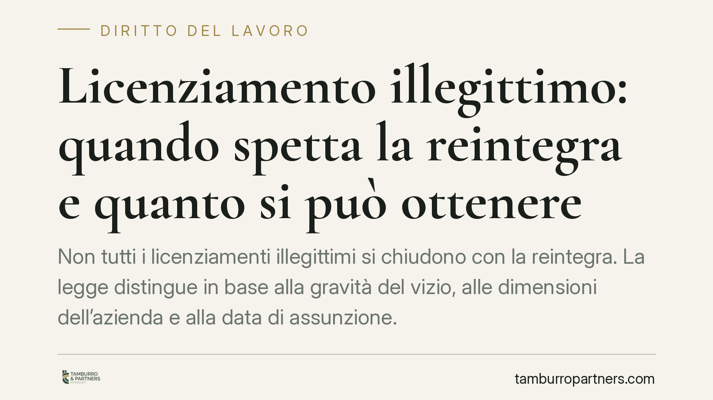

Licenziamento illegittimo: quando spetta la reintegra e quanto si può ottenere
Non tutti i licenziamenti illegittimi si chiudono con la reintegra. La legge distingue in base alla gravità del vizio, alle dimensioni dell'azienda e alla data di assunzione. Capire quale tutela è concretamente perseguibile serve a impostare correttamente l'impugnazione, a rispettare i termini di decadenza e a stimare le somme in gioco.

Le due tutele: reintegra e indennità
Di fronte a un licenziamento illegittimo il lavoratore può ottenere, a seconda dei casi, la reintegra nel posto di lavoro oppure una tutela solo indennitaria, cioè una somma di denaro senza ripristino del rapporto.
Quale delle due si applica dipende da tre fattori: la gravità del vizio che colpisce il licenziamento, le dimensioni del datore di lavoro e la data di assunzione del lavoratore.
Per i rapporti sorti fino al 6 marzo 2015 si applica l'art. 18 dello Statuto dei lavoratori (L. 300/1970), come riformato dalla L. 92/2012. Per i rapporti nati dal 7 marzo 2015 vale invece il regime a tutele crescenti del D.Lgs. 23/2015. I due sistemi hanno logiche diverse e vanno tenuti distinti.
Quando spetta la reintegra
Nel regime dell'art. 18, la reintegra piena è riservata ai vizi più gravi: licenziamento discriminatorio, nullo, orale o intimato in violazione di specifiche tutele (ad esempio in gravidanza).
Nel licenziamento disciplinare, il discrimine è preciso. La reintegra (cosiddetta attenuata) spetta quando:
- il fatto contestato è insussistente, cioè non è avvenuto;
- il fatto non è punibile con il licenziamento perché rientra tra le condotte per cui il contratto collettivo prevede una sanzione conservativa.
Non basta invece la sproporzione della sanzione. Se il fatto esiste ed è astrattamente idoneo a giustificare un licenziamento, ma la misura appare eccessiva, secondo l'orientamento della Cassazione la tutela è di norma solo indennitaria, non reintegratoria. La differenza tra "fatto insussistente" e "fatto sussistente ma punito in modo sproporzionato" è quindi il vero snodo del contenzioso disciplinare.
Nel regime a tutele crescenti la reintegra è ancora più circoscritta: opera per i licenziamenti nulli e discriminatori e, in ambito disciplinare, quando è dimostrata la diretta insussistenza del fatto materiale contestato.
Come si calcola l'indennità
Nell'art. 18 riformato, la tutela indennitaria ordinaria prevede un'indennità compresa tra un minimo e un massimo di mensilità, graduata dal giudice.
Nei casi di reintegra attenuata dell'art. 18, oltre al ripristino del rapporto spetta un risarcimento parametrato alle retribuzioni perse, con un tetto e con la detrazione dell'aliunde perceptum, cioè di quanto il lavoratore ha guadagnato altrove nel frattempo (e, in alcuni casi, dell'aliunde percipiendum, ciò che avrebbe potuto guadagnare usando l'ordinaria diligenza).
Attenzione a una differenza tecnica rilevante: nel D.Lgs. 23/2015 il meccanismo dell'aliunde perceptum opera nelle ipotesi di reintegra, mentre non incide sulla tutela indennitaria ordinaria, che è costruita come importo predeterminato in funzione dell'anzianità di servizio. Confondere i due regimi porta a stime sbagliate.
Sul piano fiscale, le somme risarcitorie da licenziamento sono generalmente soggette a tassazione separata ai sensi dell'art. 17 del TUIR (D.P.R. 917/1986), fatte salve le componenti eventualmente esenti. Il trattamento va verificato caso per caso.
L'onere della prova
Un punto spesso sottovalutato: nel licenziamento l'onere di provare la giustificazione grava sul datore di lavoro. È l'azienda a dover dimostrare la sussistenza del giustificato motivo o della giusta causa, non il lavoratore a dover provare l'illegittimità.
Questo vale sia per i licenziamenti disciplinari sia per quelli per motivi economici, dove il datore deve provare le ragioni organizzative e, di norma, l'impossibilità di un diverso impiego (repêchage).
Le eccezioni
La reintegra può risultare in concreto non praticabile o essere sostituita da tutele diverse in alcune situazioni: cessazione o cessione dell'azienda, sopravvenuta impossibilità del rapporto (ad esempio per raggiungimento dei requisiti pensionistici), oppure scelta del lavoratore di optare per l'indennità sostitutiva della reintegra, dove prevista.
Cosa fare in concreto
- Impugna il licenziamento entro 60 giorni dalla comunicazione, in forma scritta anche stragiudiziale (art. 6 L. 604/1966).
- Deposita il ricorso giudiziale entro i successivi 180 giorni, oppure comunica nello stesso termine la richiesta di conciliazione o arbitrato: in mancanza l'impugnazione diventa inefficace e il diritto decade.
- Individua il regime applicabile verificando la data di assunzione (ante o post 7 marzo 2015) e le dimensioni del datore di lavoro.
- Raccogli e conserva la documentazione: lettera di licenziamento, contestazioni disciplinari, contratto collettivo applicato, buste paga e prove dei redditi percepiti altrove.
- Valuta in anticipo il tipo di tutela concretamente perseguibile — reintegra o indennità — prima di avviare la causa, per impostare correttamente domande e stime economiche.
---
Contributo informativo a cura di Tamburro & Partners - Avv. Giuseppe Tamburro. Non costituisce parere legale.
Ogni storia di lavoro ha i suoi tempi.
Se gestisci HR e vuoi un confronto su contenzioso, ispezioni o licenziamenti, scrivi allo studio. Ti rispondiamo entro un giorno lavorativo.